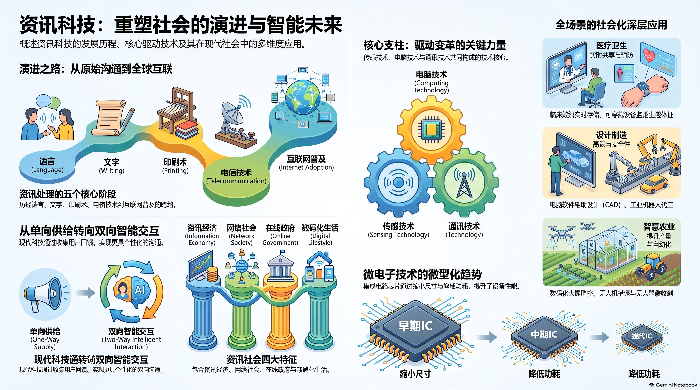
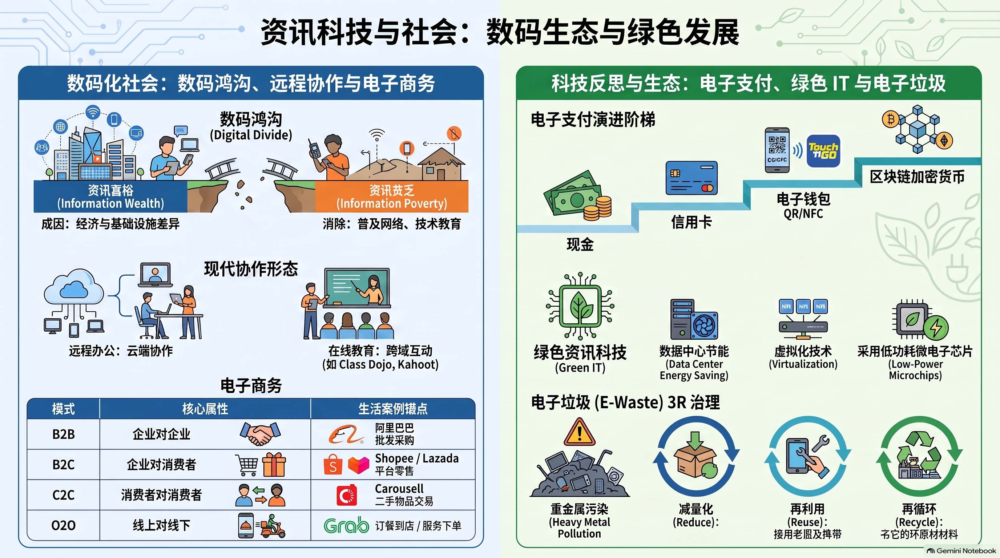

🎯 一、 单元教学与复习目标导航
1.1 课程标准核心素养
依据董教总华文独中工委会统一课程委员会《资讯科技课程标准》，本章作为联结计算机技术与现实人类社会的枢纽章节，旨在引导学生建立健全的数字公民素养与社会责任意识：
- 资讯科技本质与硬件演进：理解资讯科技的四大核心特质（跨区域即时性、同步性、多媒体展示、云端存储），掌握微电子与纳米芯片对硬件性能与低能耗的决定性作用；
- 信息甄别与批判性思维：精通真伪网络资讯甄别的黄金法则（官方网站验证、多方交叉核对、善用搜寻技术），树立网络求真意识；
- 数字化生存与本土公共治理：对比传统生活与现代数字生活的时空演进，熟知马来西亚主流电子政务（e-Government）及公共查验平台；
- 数字风险防御与企业数字化管理：全面识别网络通讯霸凌、网络诈骗、虚假资讯与网购欺诈的隐患及具体应对策略，掌握现代企业无纸化办公的四大支撑要素。
1.2 师生教学达成清单 (Checklist)
📖 二、 课本官方中英对照核心术语速查表
（严格依据董总《高中资讯科技第 1 册：中英名词对照表》收录归纳）：
| 中文术语 | 英文术语 | 课本核心概念阐释 |
|---|---|---|
| 资讯科技 / 信息技术 | Information Technology (IT) | 用于研究、开发、维护和使用计算机系统、软件及网络进行数据处理与通信的综合技术。 |
| 资讯社会 | Information Society | 以资讯和知识的生产、分配、使用为核心经济与文化驱动力的高级社会形态。 |
| 电子政务 / 电子政府 | Electronic Government (e-Gov) | 政府机构运用网络与资讯科技向公众和企业提供高效、透明政务服务的治理模式。 |
| 电子商务 | Electronic Commerce (e-Commerce) | 依托互联网和移动通信网络进行的商品交易、支付与商业服务运营。 |
| 微电子技术 | Microelectronics Technology | 基于微细加工与纳米半导体工艺制造集成电路芯片的核心硬件技术。 |
| 芯片 / 晶片 | Chip / Integrated Circuit (IC) | 包含海量微型晶体管与其他电路元件的微型半导体基片。 |
| 云存储 / 云端储存 | Cloud Storage | 将数据存放在由第三方运营商托管的多台虚拟服务器集群上的网络化存储模式。 |
| 智慧产权 / 知识产权 | Intellectual Property (IP) | 人类在智力劳动中创造的精神财富成果在法律上享有的专有权利（如著作权、专利权）。 |
| 传感器 / 感应器 | Sensor | 感受外界物理信号（距离、温度、光线）并按一定规律变换为可用电信号的器件。 |
| 数码图书馆 | Digital Library | 将海量文献、书籍以数字化格式存储并提供跨时空网络检索与阅读的公共学术平台。 |
| 网络霸凌 / 网络欺凌 | Cyberbullying | 借助即时通讯、社交媒体或游戏平台，对受害者进行蓄意、反复的侮辱、攻击与孤立行为。 |
| 虚假资讯 / 假新闻 | Fake News / Misinformation | 蓄意捏造、歪曲客观事实，企图误导公众舆论或谋取非法利益的虚假信息。 |
| 无纸化办公 | Paperless Office | 依靠电子文档、云端协同与数字化流转，减少或完全消除物理纸张消耗的现代办公模式。 |
🌐 三、 4.1 资讯科技发展与应用
(1) 资讯科技的四大核心特质（课本核心简答题）

- 跨区域和即时性 (Cross-regional & Real-time)：人与人之间的沟通不再受物理距离限制，无须面对面。身处异国他乡也能通过网络视讯即时通话，实现虚拟“在场”。
- 资讯的同步性 (Information Synchronization)：处于不同地理位置、不同时区的人群，能够通过网络平台在同一毫秒内同步接收到完全一致的信息。
- 多媒体综合展示 (Multimedia Presentation)：信息传播不再局限于枯燥的单一文字，而是融合文字、高保真音频、高清静态图像、动态视频与交互式三维模型，直观生动。
- 云端弹性储存 (Cloud Storage)：数据脱离物理介质约束，通过云端服务器实现随时随地的安全备份、高速读取、协同编辑与版本追踪。
(2) 硬件革命基石：微电子与纳米芯片

- 电脑硬件微型化本质：电脑主板由各种电路板、电阻电容电子元器件及半导体芯片构成。其中集成电路芯片（Integrated Circuit, IC）是计算机的算力心脏。
- 微电子制造技术突破：得益于微细加工与纳米工艺，芯片能够在指甲盖大小的面积上集成数百亿个晶体管，带来了四大革命性成果：体积越来越小、电能能耗越来越低、计算性能越来越强、集成功能越来越多。
(3) 推动资讯科技日新月异发展的七大动力

- 电脑技术的发展：芯片算力与微体系架构的持续突破；
- 网络硬体设备的发展：千兆光纤网络、路由器与 5G 基站的高速普及；
- 网络通讯协定的完善：TCP/IP、HTTP/HTTPS 与 Wi-Fi 等通信协议体系不断演进；
- 移动设备程式的发展：智能手机与海量移动移动应用 App 的生态繁荣；
- 人类对高效生活的迫切需求：追求极致便捷的衣食住行、医疗教育与办公效率；
- 政府的前瞻性国家政策支持：国家级数字经济战略、宽带普及率与智慧城市基建投入；
- 全球经济一体化的快速发展：跨国金融结算与全球产业链高度依赖信息化协同。
(4) 汽车智能传感技术应用

课本以汽车安全传感器为例，展现了物联网多模态传感对现代生活的守护：
- 盲点监测预警：自动感应车身周围盲区是否有行人或其他车辆靠近；
- 倒车安全防撞：倒退时通过超声波雷达探测障碍物距离并鸣音告警；
- 自适应巡航控制 (ACC)：动态监测前车车距与相对速度，自动制动防追尾。
(5) 辨别真伪网络资讯的“黄金三原则”

- 官方与权威渠道查证：优先登录政府官方门户、主流专业学术机构或正规新闻社查验原始通报；
- 多方独立交叉核对：对比不同独立媒体与权威专家的报道，辨析是否存在逻辑断层、孤证或移花接木；
- 善用搜索引擎高阶功能：运用反向以图搜图（Reverse Image Search）、限定信誉域名（如
site:gov.my）核实原始发布时间与出处。
👥 四、 4.2 资讯社会演变与挑战
(1) 资讯社会理论基石与四大基本特征

1959年美国社会学家丹尼尔·贝尔 (Daniel Bell) 首次提出“后工业社会”（后明确断言“后工业社会就是资讯社会”）；1980年未来学家阿尔温·托夫勒 (Alvin Toffler) 出版《第三次浪潮》，宣告人类进入资讯社会。
根据董总课本，资讯社会具备四大基本特征：
- 资讯经济 (Information Economy)：知识型人才成为首要资源，产业结构全面向软件、数据与现代服务业倾斜；
- 网络社会 (Networked Society)：互联网络成为社会运转的神经中枢，跨越地理时空限制；
- 在线政府 (Online Government)：政府通过政务门户提供一站式、透明高效的公共服务；
- 数码生活 (Digital Life)：民众的生活工具、社交方式与娱乐消费全方位数码化。
(2) 马来西亚在线政府（电子政务）典型平台

| 机构与平台名称 | 官方网址/形态 | 核心民生服务功能 |
|---|---|---|
| 国民登记局 (JPN) | myidentity.jpn.gov.my | 线上预约、新生儿出生报生登记、大马卡 (MyKad) 挂失与更换。 |
| 内陆税收局 (LHDN) | mytax.hasil.gov.my | ezHASiL 电子报税、个人所得税评估核对与线上缴税清算。 |
| 大马公司委员会 (SSM) | ezbiz.ssm.com.my | 商业实体线上注册、企业年报提交、独资/合伙企业延期。 |
| 官方辟谣核实平台 | sebenarnya.my | 专门针对社交网络谣言进行官方快速查证辟谣，发布权威真伪对照。 |
| 陆路交通数字服务 (MyJPJ) | 手机移动应用程序 | 电子驾照 (e-LMM)、电子路税 (e-LKM) 即时出示与交通违章罚单缴交。 |
(3) 科技应用前后生活三大维度对比

| 生活维度 | 资讯科技应用前（传统生活） | 资讯科技应用后（现代数码生活） |
|---|---|---|
| 通讯联系 | 依赖纸质书信（耗时数天甚至数周）、固定电话，受制于地理距离。 | 即时通讯 App（WhatsApp、微信）、高清网络视讯，全球毫秒级即时互通。 |
| 资讯获取 | 报纸期刊、纸质大百科全书，信息更新慢、检索费时繁琐。 | 网络搜索引擎、数码图书馆、维基平台，海量资讯秒级检索与跨时空阅读。 |
| 购物消费 | 必须亲临实体商铺，受营业时间限制，现金或支票面对面找零结算。 | 电子商务平台（Shopee、Lazada）、电子钱包无现金扫码，24小时全球选购送货上门。 |
(4) 数码生活危机隐患与应对指引

- 网络通讯诈骗：不轻信陌生的中奖短信或恐吓电话，绝不点击可疑短链接，不随意泄露 OTP 验证码；
- 网络霸凌与言语侮辱：不参与网络对骂，保留文字/截图证据，向社交平台投诉封禁并向师长求助；
- 网购商业欺诈：选择信誉良好的平台商户，坚持平台担保交易，收货时录像验货，保留发票凭据维权。
(5) 现代企业无纸化办公 (Paperless Office) 四大成功支柱

- 全面的员工数字化培训：提升全体员工的数码办公技能与电子系统操作习惯；
- 健全的规章制度与流程指引：明确电子公文签署的法律效力与业务审批流转规范；
- 完备的数据安全与备份政策：实施本地与异地多副本云端定期备份，防范勒索病毒与数据丢失；
- 完善的软硬件基础设施配置：部署高性能服务器、高速局域网及协同办公办公套件。
🗺️ 五、 配套全景考点图谱与思维导图
基于 NotebookLM 与董总官方大纲精炼的资讯科技与社会全景图谱，点击图片可全屏高清放大：

📌 资讯科技：演进与智能未来全景考点图谱 · 点击放大

📌 第一册 第4章 资讯科技核心逻辑思维导图 · 点击放大

📌 数码生态与绿色发展知识框架图 · 点击放大
⚡ 六、 师生考前 3 分钟极速速记卡
四大特质跨区域即时性 · 同步性 · 多媒体展示 · 云端储存
硬件四大变革微电子与纳米芯片实现：体积更小 · 能耗更低 · 性能更强 · 功能更多
三大支柱传感技术 (感知窗口) · 电脑技术 (处理算力) · 通讯技术 (高速传输)
黄金三原则官方网站查证 · 多方跨站核对 · 善用搜索引擎反向技术
社会四大特征资讯经济 · 网络社会 · 在线政府 · 数码生活
大马典型政务JPN (报生卡) · LHDN (报税) · SSM (商号) · MyJPJ (驾照) · Sebenarnya.my (辟谣)
无纸化四支柱员工培训 · 规章规范 · 安全备份政策 · 基础设施配置
📝 七、 互动题库与全景智能评测系统
卷A基础 · 卷B进阶 · 模拟卷
严格对接董教总《资讯科技》第4章课程标准与 2026/2027 统考新规范，收录 80 道全真单项选择题（每 10 题一组分页自测，即判即析并展示教师核心考点）以及 15 道情境综合作答题（包含独立小问卡片与评分量规）。
3
套完整自测试卷
80
道全真单选题（即判即析）
15
道情境作答题（配量规）
10题/组
科学分页自测控制